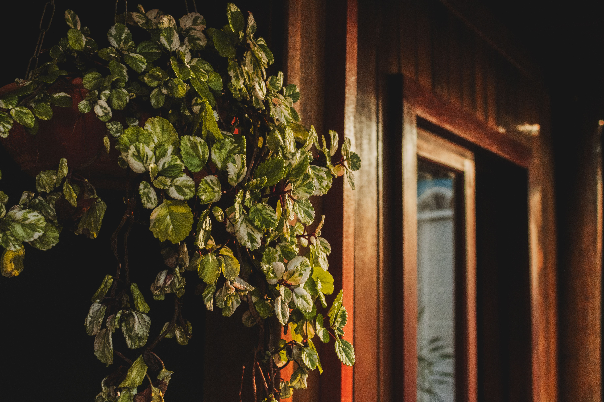
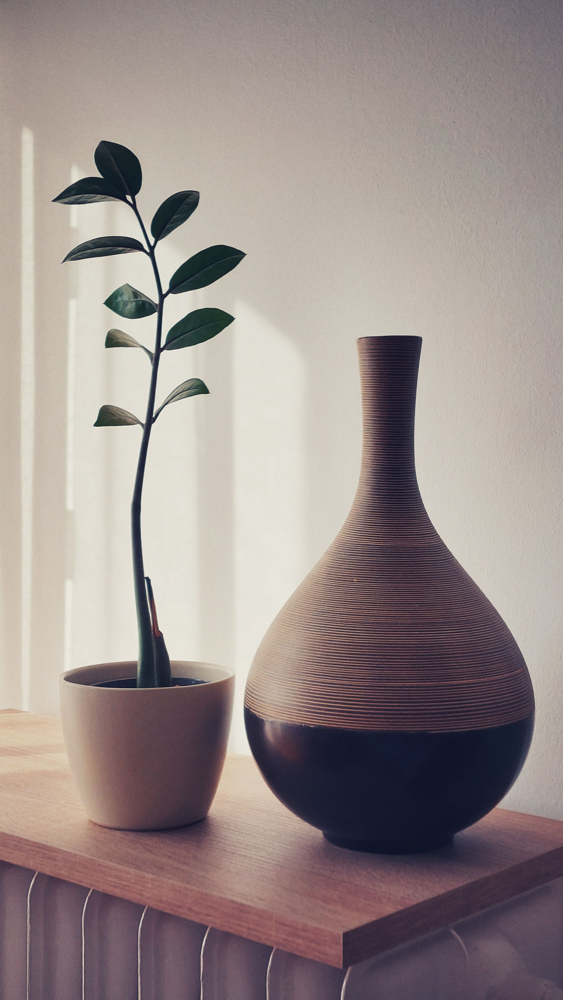

En este artículo
Introducción
Aprende a seleccionar, limpiar, secar, etiquetar y almacenar semillas para la próxima temporada, evitando humedad, mezclas y errores que reducen su viabilidad.
Antes de empezar, observa las condiciones reales de tu casa o jardín. Temperatura, humedad, exposición, materiales, tipo de planta y hábitos cotidianos cambian el resultado de cualquier recomendación general.
La mejor estrategia es trabajar por prioridades: primero seguridad y causas del problema, después mantenimiento y finalmente mejoras de comodidad o apariencia. Así evitas gastar tiempo y dinero en soluciones que solo esconden síntomas.
Esta guía está pensada para aplicar paso a paso. Cuando una tarea implique electricidad, estructura, trabajos en altura, daños importantes, productos peligrosos o una situación que no puedas evaluar con seguridad, recurre a un profesional cualificado.
Selecciona plantas y semillas adecuadas para guardar
Empieza con plantas sanas y correctamente identificadas. Si quieres conservar características concretas, averigua si la variedad es de polinización abierta o híbrida. Las semillas de híbridos pueden germinar, pero la descendencia no necesariamente será igual a la planta original.
Elige ejemplares vigorosos que hayan mostrado buen comportamiento en tu jardín. Evita guardar semillas de plantas claramente enfermas cuando exista riesgo de transmitir patógenos asociados a la semilla.
Deja que algunas flores o frutos completen su maduración. En cultivos cosechados normalmente antes de madurar, como ciertas vainas, esto significa reservar ejemplares específicamente para semilla.
Etiqueta las plantas antes de que todo se seque. Una pequeña cinta o etiqueta con variedad evita confusiones cuando varias plantas tienen semillas parecidas.
Considera la posibilidad de cruzamientos. Especies que se polinizan entre variedades cercanas pueden producir semillas con características mezcladas. La distancia o aislamiento necesario depende de la especie.
Si solo necesitas pocas semillas, selecciona más de una planta cuando sea posible. Esto puede ayudar a mantener diversidad genética en variedades de polinización abierta.
Consulta además normativa local si pretendes intercambiar o vender semillas. Para uso doméstico, una buena identificación sigue siendo esencial para saber qué estás guardando.
Qué conviene revisar antes de actuar
Avanza de forma gradual y comprueba el resultado antes de añadir otra medida. Esta forma de trabajar permite distinguir qué cambio aporta una mejora real y evita intervenciones innecesarias, compras impulsivas o tareas que después resultan difíciles de mantener.
Recolecta las semillas en el momento correcto
Las semillas secas, como muchas flores, lechugas o leguminosas, suelen recolectarse cuando las cápsulas o vainas han madurado y empiezan a secarse. No esperes tanto que se abran y dispersen todo el contenido.
Utiliza un recipiente o bolsa de papel para recoger cabezas secas. El papel permite cierta ventilación mientras terminas el proceso, a diferencia de una bolsa plástica cerrada que puede retener humedad.
Las semillas de frutos carnosos requieren separar pulpa y semilla. El procedimiento cambia según la especie; tomates, por ejemplo, suelen manejarse de manera diferente a pimientos o calabazas.

Recolecta en un día seco cuando sea posible. Material mojado necesita secarse rápidamente para reducir riesgo de moho.
No mezcles variedades durante la cosecha. Trabaja una a la vez y etiqueta el recipiente inmediatamente, incluso si crees que recordarás cuál es.
Retira semillas claramente dañadas, perforadas o inmaduras. Una selección inicial reduce material inútil y facilita el almacenamiento.
Si una especie dispersa semillas de forma explosiva, coloca una bolsa de papel o malla alrededor de las cabezas maduras antes de que se abran, sin impedir ventilación.
Cómo aplicar estas medidas de forma práctica
Avanza de forma gradual y comprueba el resultado antes de añadir otra medida. Esta forma de trabajar permite distinguir qué cambio aporta una mejora real y evita intervenciones innecesarias, compras impulsivas o tareas que después resultan difíciles de mantener.
Limpia y seca las semillas antes de almacenarlas
Separa restos de hojas, cápsulas y pulpa. Para semillas secas, tamices y corrientes suaves de aire pueden ayudar, siempre evitando perder semillas pequeñas.
Extiende las semillas en una sola capa sobre papel, malla o superficie limpia. Mantén buena ventilación y evita sol intenso directo si puede recalentar el material.
El tiempo de secado depende de tamaño, humedad ambiental y especie. No utilices hornos o temperaturas altas para acelerar el proceso, porque el calor puede reducir viabilidad.
Remueve las semillas ocasionalmente para que el secado sea uniforme. Si aparecen olor extraño o moho, separa el material afectado y revisa las condiciones.
Las semillas procedentes de frutos húmedos deben quedar libres de pulpa antes del secado. Algunos cultivos requieren fermentación controlada; sigue instrucciones específicas para la especie.
Antes de guardar, asegúrate de que los recipientes también estén secos. Un sobre húmedo puede arruinar semillas que estaban correctamente preparadas.
Trabaja sobre una bandeja clara cuando las semillas sean diminutas. Esto reduce pérdidas y permite detectar restos vegetales con facilidad.
Señales que ayudan a tomar mejores decisiones
Avanza de forma gradual y comprueba el resultado antes de añadir otra medida. Esta forma de trabajar permite distinguir qué cambio aporta una mejora real y evita intervenciones innecesarias, compras impulsivas o tareas que después resultan difíciles de mantener.
Etiqueta y almacena las semillas en condiciones estables
Etiqueta cada lote con especie, variedad, fecha y, si es útil, lugar de recolección. Esta información es más valiosa que confiar en la memoria después de varios meses.

Los sobres de papel son prácticos para organizar, pero si se guardan dentro de un recipiente hermético las semillas deben estar completamente secas. La humedad atrapada favorece deterioro.
Elige un lugar fresco, oscuro y seco con temperatura estable. Evita cocinas, baños, vehículos o cobertizos que sufran grandes cambios de calor y humedad.
Algunas personas utilizan desecantes en recipientes cerrados. Si lo haces, mantenlos separados de las semillas y sigue las instrucciones del producto.
Organiza los sobres por año o familia vegetal. Una caja pequeña con separadores permite encontrar rápidamente lo que necesitas en la siguiente temporada.
No olvides que la viabilidad disminuye con el tiempo a ritmos diferentes. Utiliza primero los lotes más antiguos y conserva cantidades realistas.
Revisa el almacenamiento durante el invierno. Si detectas humedad, insectos o etiquetas ilegibles, actúa antes de que el problema afecte a toda la colección.
Mantenimiento y seguridad
Avanza de forma gradual y comprueba el resultado antes de añadir otra medida. Esta forma de trabajar permite distinguir qué cambio aporta una mejora real y evita intervenciones innecesarias, compras impulsivas o tareas que después resultan difíciles de mantener.
Comprueba la viabilidad y planifica la próxima siembra
Unas semanas antes de sembrar, realiza una prueba de germinación si las semillas son antiguas o importantes. Coloca una muestra conocida en condiciones adecuadas para la especie y registra cuántas germinan.
Si germina un porcentaje bajo, puedes aumentar la densidad de siembra o sustituir el lote. No compenses automáticamente sin considerar espacio y competencia entre plántulas.
Consulta si la especie necesita estratificación, escarificación u otro tratamiento previo. No todas las semillas germinan simplemente al colocarlas en sustrato húmedo.
Prepara un calendario con fecha aproximada de siembra interior o directa. Ajusta según últimas heladas, temperatura del suelo y clima local.
Conserva parte del lote si tienes muchas semillas. Sembrar absolutamente todo en una temporada elimina la reserva en caso de problemas.
Registra resultados de germinación y vigor. Esa información te permitirá decidir qué variedades merece la pena volver a conservar.
Guardar semillas se vuelve más sencillo con experiencia. Empieza con especies fáciles, mantén etiquetas precisas y amplía la colección solo cuando el sistema de almacenamiento funcione.

Cómo convertirlo en una rutina sostenible
Avanza de forma gradual y comprueba el resultado antes de añadir otra medida. Esta forma de trabajar permite distinguir qué cambio aporta una mejora real y evita intervenciones innecesarias, compras impulsivas o tareas que después resultan difíciles de mantener.
Revisión final para mantener buenos resultados
Cuando termines las tareas principales, vuelve a observar el espacio después de varios días. El uso cotidiano, los cambios de clima y la respuesta de materiales o plantas muestran si la solución funciona de verdad.
Anota qué medida produjo una mejora clara y cuál resultó innecesaria. Este registro evita empezar desde cero la próxima temporada y permite invertir únicamente donde existe una necesidad comprobada.
Comprueba también seguridad, limpieza y accesibilidad. Herramientas, productos, cables, recipientes y piezas móviles deben quedar guardados de forma estable y fuera del alcance de niños o mascotas cuando corresponda.
No intentes perfeccionar todo en una sola jornada. Los sistemas que se mantienen durante meses suelen construirse con pequeños ajustes, revisiones periódicas y hábitos fáciles de repetir.
Si el problema original vuelve rápidamente, busca la causa antes de repetir el mismo tratamiento. Una fuga, un material deteriorado, un suelo inadecuado o un hábito de mantenimiento incorrecto necesita una solución específica.
Finalmente, conserva fotografías o notas. Comparar el estado actual con el de semanas anteriores ayuda a detectar tendencias y tomar decisiones basadas en resultados reales.
Plan de seguimiento durante las próximas semanas
Durante la primera semana, comprueba el resultado cada dos o tres días sin realizar cambios automáticos. Observa si las condiciones mejoran y registra cualquier señal nueva que pueda indicar una causa diferente.
En la segunda semana, ajusta únicamente aquello que haya demostrado ser poco práctico. Evita cambiar varias variables al mismo tiempo porque después será difícil saber qué medida produjo el resultado.
Al finalizar el primer mes, realiza una revisión más completa. Compara fotografías, notas, consumo de recursos o respuesta de las plantas según el tema y decide qué hábitos merece la pena mantener.
Si una solución requiere demasiado tiempo para sostenerse, simplifícala. Un método ligeramente menos perfecto pero fácil de repetir suele ofrecer mejores resultados a largo plazo que una rutina complicada que se abandona.
Guarda los materiales y herramientas relacionados en un lugar lógico y etiquetado. Tener todo preparado reduce fricción cuando llegue la siguiente revisión y evita comprar duplicados.
Esta evaluación periódica convierte una intervención puntual en un sistema de mantenimiento. Con el tiempo necesitarás menos correcciones porque detectarás los problemas antes de que se vuelvan grandes.
Preguntas frecuentes
¿Puedo guardar semillas de cualquier planta?
No siempre obtendrás plantas iguales a la original. Los híbridos pueden producir descendencia diferente y algunas variedades necesitan condiciones especiales.
¿Cómo sé si una semilla está suficientemente seca?
Debe estar completamente seca antes del almacenamiento; el tiempo depende de la especie y del ambiente. Evita guardarla si conserva humedad visible o tacto blando impropio.
¿Dónde conviene guardar las semillas?
En un lugar fresco, seco, oscuro y con temperatura relativamente estable, dentro de recipientes o sobres correctamente etiquetados.
¿Cuánto tiempo duran las semillas guardadas?
Depende de la especie y de las condiciones de almacenamiento. Algunas conservan buena viabilidad durante años y otras pierden capacidad de germinación más rápido.
¿Cómo puedo comprobar si todavía germinan?
Una prueba de germinación con una pequeña muestra permite estimar qué porcentaje sigue siendo viable antes de sembrar todo el lote.
Conclusión
Cómo preparar y guardar semillas para la próxima temporada requiere sobre todo observación, planificación y constancia. Las mejores decisiones son aquellas que responden a las condiciones reales del espacio y pueden mantenerse sin crear trabajo innecesario.
Empieza por las medidas sencillas y seguras, evalúa su efecto y avanza únicamente cuando haga falta. Esta estrategia permite conseguir resultados más estables y aprovechar mejor tiempo, agua, energía y materiales.
Cuando exista un problema técnico, estructural o de seguridad que supere una tarea doméstica normal, solicita ayuda profesional. Resolver correctamente la causa suele ser más eficaz que repetir soluciones temporales.